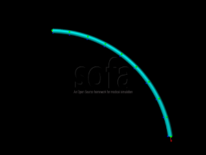

Concentric Tubes Tutorials
2/5

In the previous scene, we defined a rest shape for a tube. In this step, we define the instrument itself, in a different node.
From a mechanical point of view, we add the following components:
- EulerImplicit to integrate the system in time
- BTDLinearSolver to solve the system. This component is adapted to wires, as it solves block tridiagonal matrices
- RegularGrid to define the edge topology of the wire. The grid is built in only one direction to be a wire topology
- MechanicalObject
- InterventionalRadiologyController controls the instrument
- WireBeamInterpolation makes the interpolation between two different beams
- AdaptiveBeamForceFieldAndMass
- LinearSolverConstraintCorrection solves the constraints
- FixedConstraint constraints the first beams
The node VisuTube_0 is used for the visualization of the tube. It creates a mapping between the beams and a quad topology.
To test the scene, click the 'Animate' button. Use the keyboard controls of the InterventionalRadiologyController to control the tube:
- To progress instrument
- To turn instrument